APIキーの取得
Google Maps APIを使用するには2016年11月現在ではAPIキーが必要です。ここではAPIキーの取得方法、そして取得したAPIキーを後から確認する方法について解説します。
1.新しいAPIキーを取得する
2.取得済のAPIキーを後から確認する
※ Googleアカウントが必要になりますのであらかじめ取得しておいて下さい。Googleアカウントの取得方法は「Googleアカウントの取得と利用」を御参照下さい。
新しいAPIキーを取得する
APIキーを取得するには下記のURLへアクセスして下さい。
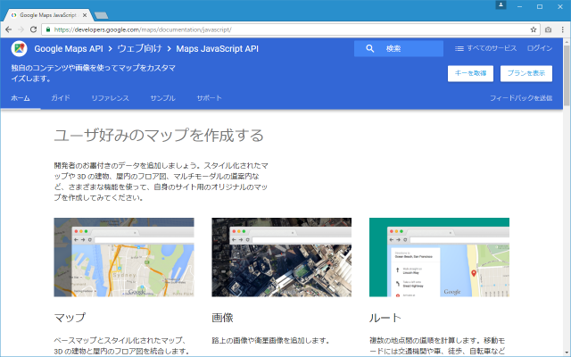
画面右上の「キーを取得」をクリックして下さい。
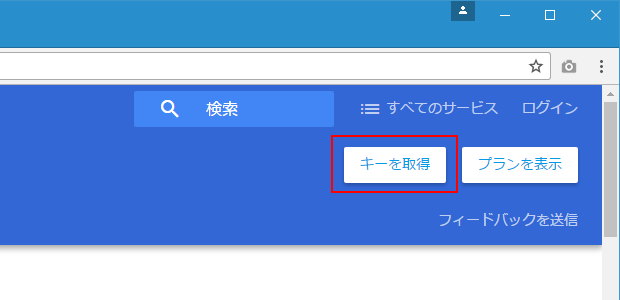
次のようなウィンドウが表示されます。「続ける」をクリックして下さい。
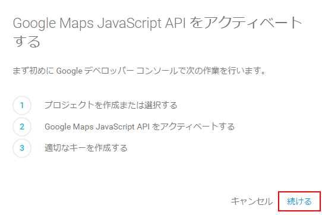
Googleアカウントにログインしていなかった場合はログイン画面が表示されますので使用するGoogleアカウントでログインを行って下さい。
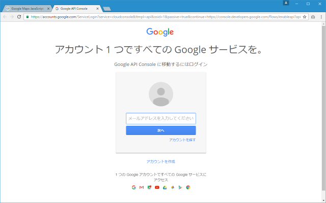
次のような画面が表示されます。
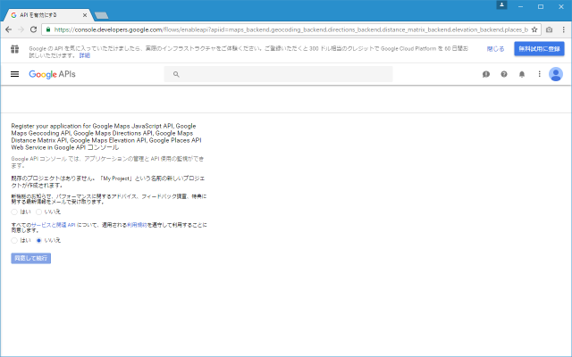
上のラジオボタンは新機能のお知らせなどを受け取るかどうかを選択して下さい。こちらはどちらでも構いません。下のラジオボタンは利用規約を遵守するかどうかの選択です。遵守できる場合は「はい」を選択して下さい。その後で「同意して続行」をクリックして下さい。
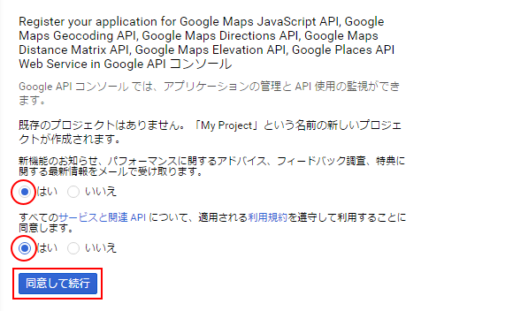
認証情報に関する画面が表示されます。
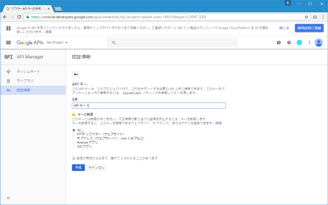
作成するAPIキーの名前を指定して下さい。任意の名前で結構です。次に「キーの制限」で「HTTPリファラー (ウェブサイト)」を選択して下さい。
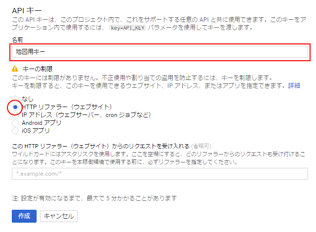
リクエストを受け付けるWebサイトを登録します。省略も可能ですが、省略した場合はご自身のAPIキーがどのサイトでも利用できてしまいますので設定を行って下さい。
例えば「www.example.com」の全てのページを対象にする場合は「www.example.com/*」のように記述します。入力した後で[Enter]キーをクリックすると次のサイトを登録できるテキストボックスが表示されますので複数のサイトを登録したい場合は同じ手順で設定して下さい。設定が終わりましたら「作成」をクリックして下さい。
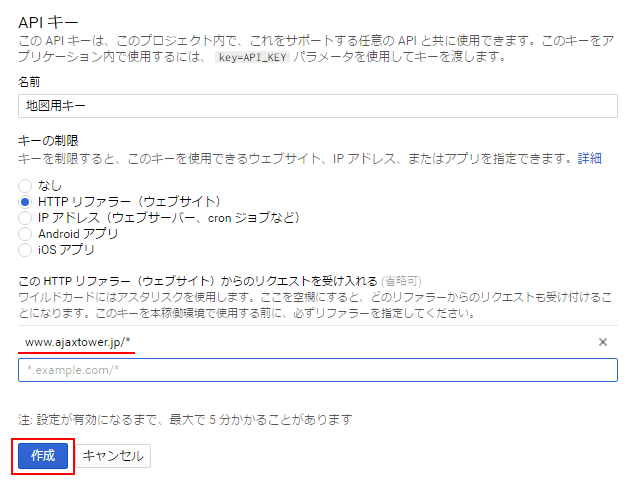
APIキーが作成されました。
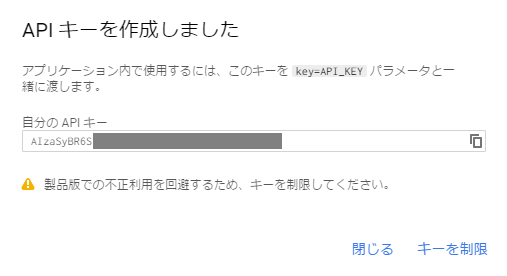
表示された文字列がAPIキーです。メモしておいてください(後から確認することもできます)。「閉じる」をクリックして終了して下さい。
取得済のAPIキーを後から確認する
取得済のAPIキーをあとから確認するには次の「Google API Console」へアクセスして下さい。(Googleアカウントにログインしておいて下さい)。
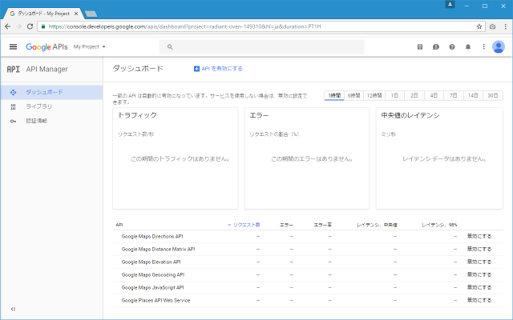
画面左側の「認証情報」メニューをクリックして下さい。
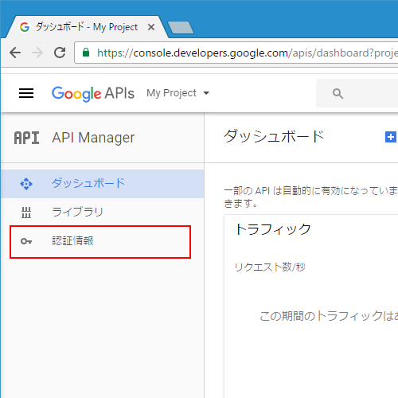
作成済のAPIキーが表示されました。
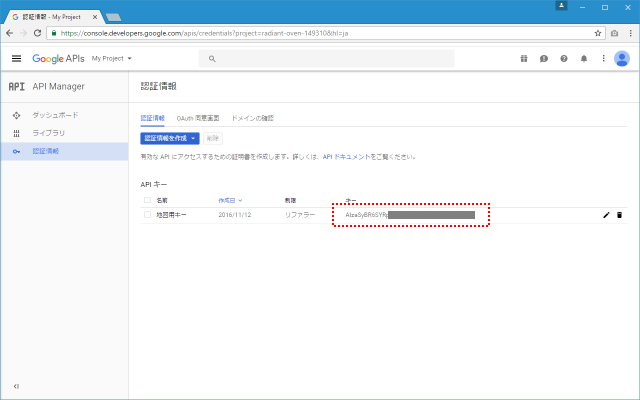
それでは次のページから今回取得したAPIキーを使いGoogle Maps APIを使用したアプリケーションを作成していきます。
( Written by Tatsuo Ikura )

著者 / TATSUO IKURA
初心者～中級者の方を対象としたプログラミング方法や開発環境の構築の解説を行うサイトの運営を行っています。